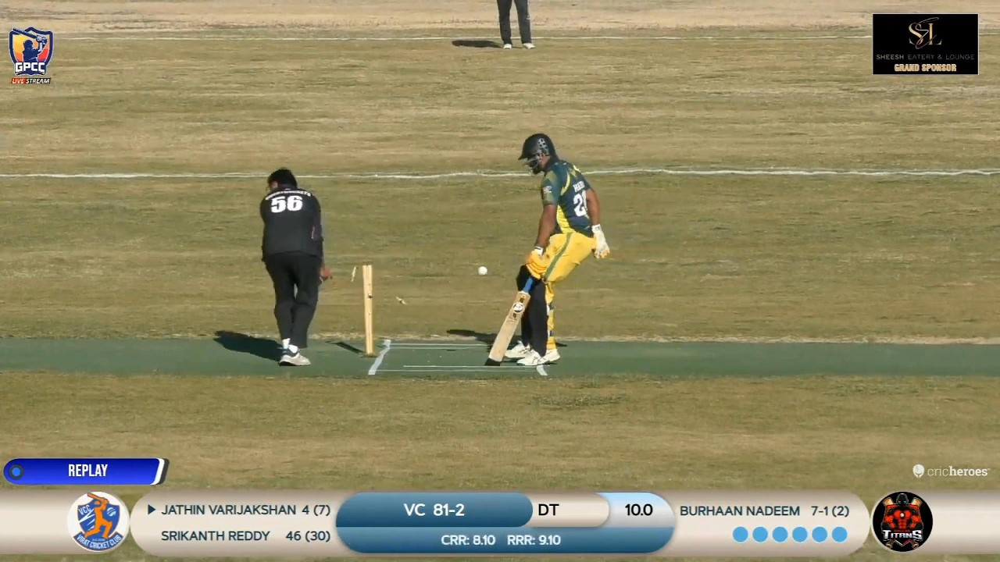
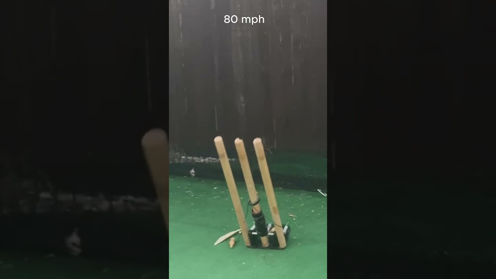
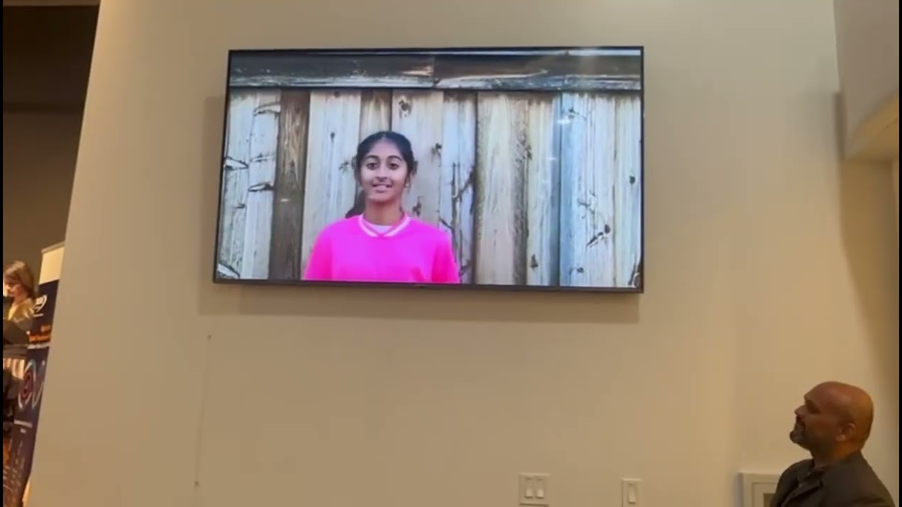

Gallery
None of this was made in a factory. Volunteers cut, tied and packed every device by hand, umpires and clubs fitted them, and the matches that followed are the reason a league was willing to adopt them. In order, from the first set of stumps to a league making them mandatory.
The first fit
Grand Prairie Cricket Club fits bail guards for its Winter Cup. Nothing about the device had been proven in a match before this one.
Look closely, because this is not the device we build today. The collar is PVC, which shattered on a direct hit here and became automotive grade silicone. Each bail carries one O-ring where two are used now, so a ring that goes is a visible warning rather than a failure.
There is no bottom stopper either. The publication offered it as an optional part, to keep the cost down for clubs that did not want it. The umpires who worked the whole tournament asked for it anyway: it parks the collar just below the bails, so resetting after an appeal is one movement at waist height. Their suggestion made the optional part the standard build.
The first game, and the tournament that followed
Devices built by volunteers, handed to a club, fitted by umpires, and then filmed ball by ball so the cricket community could judge them for itself.

Watch it work in real matches GPCC volunteers filmed every ball from several angles. Dismissal after dismissal, in competitive cricket, not staged tests. YouTube playlistAfter the tournament
Three weeks of matches led to a couple of minor upgrades. What came next was deliberate abuse of the device, at speeds no club bowler will ever produce.
27 February 2026, one of the impact tests we recorded. A Bola bowling machine firing at the stumps from 21 yards, a bowler’s length, at 95 mph.
The stump shattered. The bail guard did not, and the bails stayed tethered to it. The extra collars stacked on the stump were there deliberately: they widen the target, so a square hit tests the collar itself at the same time. Repeated impacts left the collars unaffected.

High impact tests at 80, 90 and 95 mph The runs behind the photograph above. These are what led to two O-rings per bail, wrapped several times rather than looped once. YouTube
The NTCA banquet Presenting the bail guard to the North Texas Cricket Association, February 2026. YouTubeThe start of the 2026 spring season
The NTCA President’s Cup opens the spring season, and bail guards are on the stumps for it.
Made by hand
Every device that has been used in a match was cut, threaded, knotted and sealed by a person. First for one club, then for a whole league.
A league adopts it outright
Dallas Cricket League makes bail guards standard equipment for its Fall 2026 season. 201 teams, more than 6,900 players, every ground.
In the newspaper
Star Local Media runs the story across its papers, including the Frisco Enterprise: Changing the game. Frisco ISD siblings develop free cricket injury solution.
The piece goes back to the Mark Boucher injury, explains what the device does, and asks the obvious question about why it was published openly instead of patented. The answer in print is the same one on this site: the point was to spread it as fast as possible, not to be the only one allowed to make it.